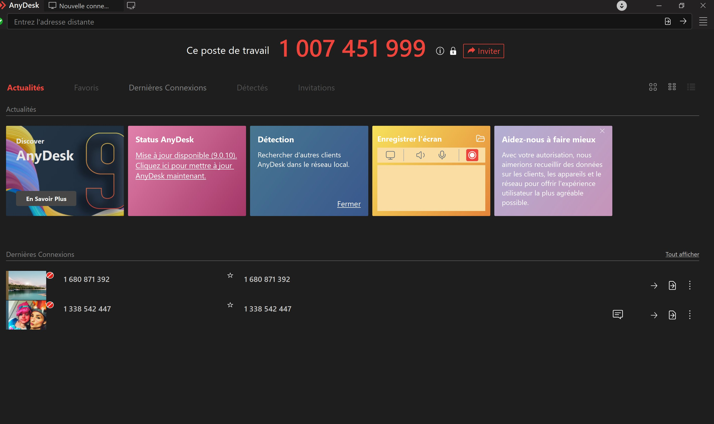
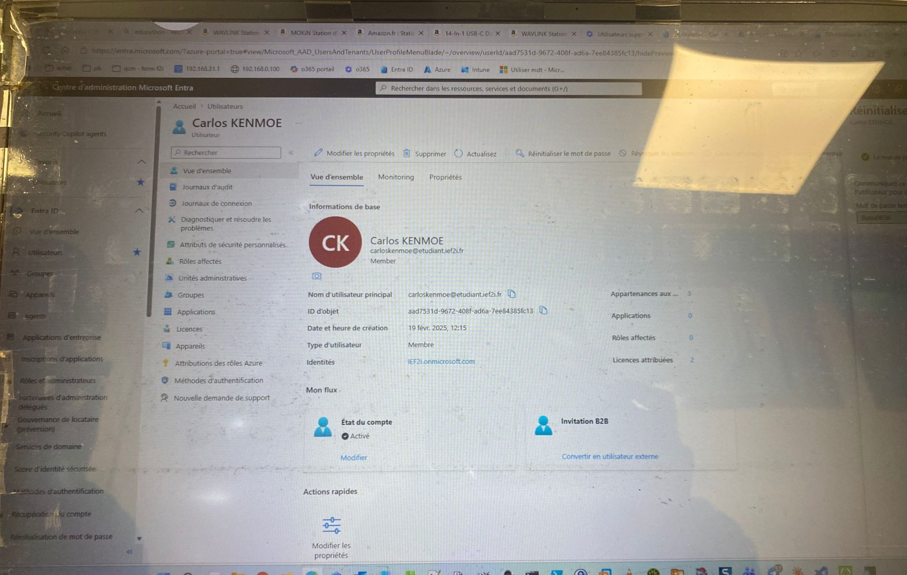
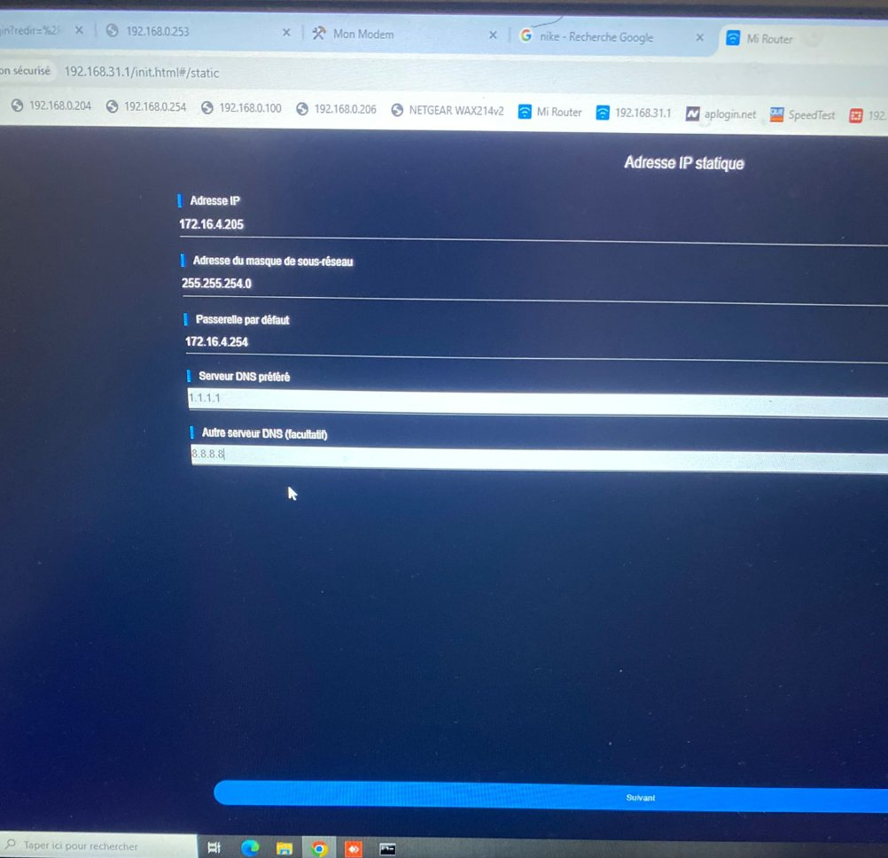
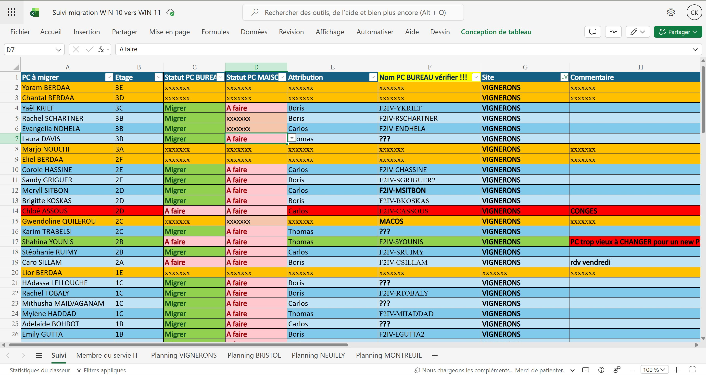
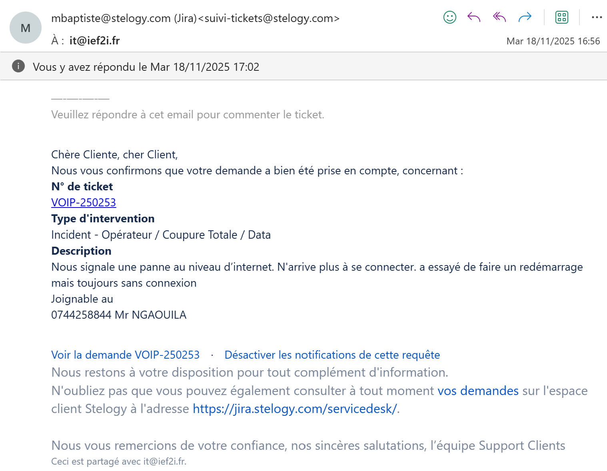

— 01
Introduction
Bonjour, je m'appelle Carlos TETCHOM KENMOE
Je suis actuellement étudiant en BTS SIO, spécialité SISR — Solutions d'Infrastructure, Systèmes et Réseaux.
Au cours de cette présentation, je vais vous présenter mon parcours, les expériences réalisées en stage et en alternance, les projets techniques sur lesquels j'ai travaillé, les compétences développées, ainsi que mon projet professionnel.
— 02
Parcours
Formation & Apprentissages
Avant d'intégrer le BTS SIO option SISR, j'ai obtenu un baccalauréat en Comptabilité et Gestion — une formation qui m'a apporté rigueur, sens de l'organisation et analyse structurée, des qualités directement transposables à la gestion d'infrastructures.
Convaincu par l'informatique, j'ai choisi la spécialité SISR pour son focus sur les réseaux, l'administration système et la cybersécurité.
Baccalauréat 2023-2024
Bac Comptabilité & Gestion
Développement de compétences analytiques, organisationnelles et de gestion de données.
2024 — 2026
BTS SIO — Option SISR
Administration Windows & Linux, réseaux, virtualisation, cybersécurité, scripting et gestion de projets techniques.
- 01Administration systèmes Windows & Linux
- 02Configuration d'équipements réseaux
- 03Sécurisation d'infrastructure
- 04Virtualisation de serveurs et environnements
- 05Gestion de projets techniques en équipe
— 03
Stages & Alternance
Expériences Professionnelles
Mes périodes en entreprise (IEF2I) m'ont permis de travailler sur des missions concrètes au sein d'un service IT actif. Cliquez sur chaque mission pour voir un aperçu de ce qui a été réalisé.
Prise en main à distance des postes utilisateurs via AnyDesk pour diagnostiquer et résoudre les incidents. Gestion des connexions entrantes et sortantes, suivi des sessions et communication avec les utilisateurs en temps réel.

Intervention sur la baie de brassage : identification des équipements actifs (switches Netgear, Cisco Catalyst), câblage et recâblage de prises RJ45, organisation des liens et vérification de la connectivité réseau.

Administration des comptes dans le Centre d'administration Microsoft Entra : création, modification, réinitialisation de mots de passe, attribution de licences et gestion des rôles pour les utilisateurs de l'organisation.

Configuration d'adresses IP statiques sur des équipements réseau : définition de l'adresse IP, masque de sous-réseau, passerelle par défaut et serveurs DNS (1.1.1.1 / 8.8.8.8) pour garantir une connectivité stable et prévisible.

Participation active au projet de migration Windows 10 vers Windows 11 sur plusieurs sites (Vignerons, Bristol, Neuilly, Montreuil). Suivi du parc sur tableur Excel partagé, coordination avec l'équipe IT et communication avec les responsables de site.

Rédaction d'emails professionnels de reporting adressés aux responsables : état d'avancement de la migration, blocages identifiés, prochaines étapes. Communication claire, structurée et adaptée à un interlocuteur non-technique.

— 04
Projet Principal
Déploiement automatisé d'images Windows avec MDT
Objectif : Créer et déployer une image Windows standardisée afin d'installer rapidement plusieurs postes destinés aux étudiants.
Contexte : L'établissement avait besoin d'une solution permettant de préparer et déployer des postes informatiques de manière rapide, homogène et automatisée pour les salles de cours.
Missions : Analyse des besoins de déploiement, création d'une image Windows de référence, installation et configuration de MDT, intégration des pilotes et applications, configuration du serveur de déploiement, capture de l'image système, déploiement sur plusieurs machines étudiantes, tests de validation et documentation technique.
Stack technique
— 05
Projets École
Réalisations Techniques
Ces projets m'ont permis de mettre en pratique les enseignements reçus, de travailler en équipe et de piloter un projet technique de la conception jusqu'à la mise en production.
- 01Infrastructure réseau avec segmentation VLAN et routage inter-VLAN
- 02Création et administration d'un domaine Active Directory (GPO, OU)
- 03Déploiement et configuration de serveurs Linux (Debian / Ubuntu)
- 04Virtualisation d'environnements complets (Proxmox / VirtualBox)
- 05Scripts d'automatisation PowerShell & Bash
— 06
Compétences
Technique & Savoir-Être
Administration réseaux
Avancé
Virtualisation
Avancé
Cybersécurité
Intermédiaire
Scripting (PS / Bash)
Intermédiaire
Support & Dépannage
Confirmé
Supervision
Intermédiaire
Compétences Professionnelles
— 07
Veille Techno.
Rester à Jour
Lors de mon expérience en entreprise, j’ai été confronté à un cas de spear phishing ciblant des utilisateurs de l’infrastructure informatique. Cette situation m’a permis de comprendre l’importance de la veille technologique et de la cybersécurité dans la protection des systèmes d’information.
Ma veille se concentre donc sur :
- › les techniques de phishing et de spear phishing
- › l’ingénierie sociale
- › les campagnes de cyberattaques
- › les méthodes de détection et de prévention
- › ainsi que les bonnes pratiques de sécurisation des infrastructures IT.
Cette veille me permet d’améliorer mes connaissances en cybersécurité et de mieux anticiper les menaces pouvant impacter les utilisateurs et les infrastructures en entreprise.
Sources utilisées
— 08
Projet Pro
Objectifs & Ambitions
Après l’obtention de mon BTS SIO option SISR, je souhaite poursuivre mon parcours dans l’administration systèmes et réseaux afin de renforcer mes compétences en infrastructure, virtualisation et cybersécurité.
Mon objectif est d’évoluer pendant plusieurs années dans des environnements systèmes et réseaux en tant qu’administrateur réseau, puis de me spécialiser progressivement dans les infrastructures cloud et hybrides.
Aujourd’hui, les entreprises utilisent de plus en plus des architectures hybrides mêlant infrastructures locales et services cloud. Il est donc essentiel pour un administrateur systèmes et réseaux de maîtriser également les technologies cloud modernes.
- ›Administration systèmes & réseaux
- ›Cybersécurité (SOC N1 / N2)
- ›Infrastructure cloud & hybride
- ›Gestion et sécurisation des environnements IT
Merci pour votre attention
Cette formation et mes expériences en entreprise m'ont permis de développer des compétences techniques et professionnelles solides, et ont confirmé mon intérêt pour les métiers de l'informatique — en particulier dans les domaines des systèmes, réseaux et cybersécurité.
Je reste disponible pour toute question